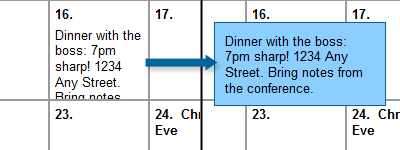

Most calendars on the web these days are built using large, complex tables. And while an argument could possibly be made that stuff in a calendar is a form of tablular data, it seems to me that in most cases a calendar is really just a list of events happening on specific dates. And that makes a table overkill for most situations in my book.
So my goal for this tutorial was this: I wanted to create a list-based calendar that used CSS for its layout, that also had the ability to display notes on specific dates (because a calendar without notes isn’t all that useful, in my mind).
I started out with the XHTML:
<ol id="calendar">
<li>
<ul>
<li>Rent due!</li>
</ul>
</li>
<li></li>
<li></li>
<li>
<ul>
<li>Vet Appointment at 3pm with Fuzzy.</li>
</ul>
</li>
<li></li>
...and so on...
</ol>
I tried to keep the XHTML as simple as possible. The entire calendar is just a big ordered list. I used an ordered list because dates on a calendar tend to occur in a pretty specific order every month, so an OL was the semantically correct choice. Also, because ordered lists are numbered by default, an OL saves me from having to manually add the date. Each date is a list item within the ordered list. If a date has a note associated with it, the note is nested within the list item as an unordered list, keeping things semantic.
Next, we start structuring the calendar list:
#calendar {
margin: 0;
padding: 0;
width: 700px;
border: 2px solid #333;
background-color: #ddd; }
Specifying the width of the calendar gives us a firm area to work with. I chose 700 pixels just to make it easier on myself – that gives me 100 pixels for every day of the week. You could put any size you wanted in here, or even use a proportional size such as ems if you’d like.
However, I ran into my first snag at this point. I knew I was going to be floating the list items, which would effectively collapse my calendar OL – the contained LIs wouldn’t be taking up any space. Originally, I got around this problem by specifying a height on the calendar, but that isn’t ideal, because not all months have the same number of weeks. So to improve the flexibility of the calendar, I added an unsemantic div to the end:
.clear {
clear: both; }
Next up, I created the basic layout for the individual calendar dates:
#calendar li {
list-style-position: inside;
font-weight: bold;
width: 88px;
height: 88px;
border: 1px solid #999;
float: left;
background-color: #fff;
padding: 5px;
overflow: hidden; }
The list-style-position property moves the list item’s number to the inside of our box. Then, all I have to do is specify a size (88px for content, plus 5px padding and 1px border on all sides = 100-by-100 pixel box) on our elements and float the elements left. Now, exactly seven list items fit in every row. To ensure our notes don’t interfere with our calendar’s layout, I’ve set the overflow of the list item to “hidden.”
We’ve gotten our dates to line up in a row, but there’s still one problem: not all months start on the first day of the week. So how do we get the first day to where it’s supposed to be? For that, I set up seven special classes:
#calendar li.sunday {
margin-left: 0; }
#calendar li.monday {
margin-left: 100px; }
#calendar li.tuesday {
margin-left: 200px; }
#calendar li.wednesday {
margin-left: 300px; }
#calendar li.thursday {
margin-left: 400px; }
#calendar li.friday {
margin-left: 500px; }
#calendar li.saturday {
margin-left: 600px; }
One of these classes gets applied to the first day of every month, which pushes the day into the proper column. The rest of the dates automatically wrap around the first one, so only one class is needed to get our columns squared away:
<ol id="calendar">
<li class="monday">
<ul>
<li>Rent due!</li>
</ul>
</li>
Now that our calendar is aligned properly, we can focus on styling the notes that make our calendar really useful:
#calendar li ul {
margin: 0;
padding: 0;
clear: both; }
#calendar li ul li {
list-style: none;
font-weight: normal;
float: none;
border: none;
padding: 5px 0;
margin: 0; }
Most of this is pretty simple stuff: we’re just removing the margins, padding, and list styles from the unordered list to conserve space, then adding a few styles to the list item to make it look nice.
Of course, there’s still one problem with our notes: because of our “overflow: hidden” rule earlier, longer notes are going to get truncated. It’s a necessary evil to keep our calendar formatted correctly. So to get around that, let’s add a hover state to our notes:
#calendar li:hover ul li, #calendar li.hover ul li {
position: absolute;
width: 150px;
margin-left: -38px;
height: auto;
background-color: #8cf;
border: 1px solid #069;
padding: 10px;
z-index: 10; }
This rule pulls our notes out of the normal document flow (with “position: absolute”), makes them a little wider, and creates a box around them. The automatic height ensures that the box we’ve created is always big enough for our note, and the z-index ensures that the note is on top of our calendar. The negative margin helps center the note over the date it came from.

And you’ll also notice we’ve specified a hover pseudo-class and a hover class above. This is because IE doesn’t respect hover states on anything other than anchors. So to get around that, we borrow our hover class JavaScript from the Easy CSS Dropdown Menus article, which allows us to use hover classes just just as easily as our pseudo-class.
And that’s all it takes to create a semantic, CSS-only calendar! At least, for as far as Firefox and Safari are concerned. Opera and Internet Explorer still present a bit of a problem: neither are displaying the numbers on our ordered list. However, both browsers are displaying the same behavior for different reasons.
Opera’s problem is simple: it doesn’t display the number whenever the list item is blank. So to fix this problem for Opera, all you need to do is fill your empty list items (those without notes) with a non-breaking space ( ).
Internet Explorer’s problem is, as usual, more complicated. IE is ignoring our “list-style-position: inside” rule from earlier and is displaying the list numbers to the left (outside) of our date box… rendering them essentially invisible. It’s a hasLayout problem, and you can read more about that here if you’d like. Unfortunately, I haven’t been able to find a real fix for this problem yet. The only viable alternative that I can find would be to include the date inside the list item (<1>, <2>, and so on), and apply a “list-style: none;” rule to the ordered list. I don’t like this solution as much, because it’s not making effective use of the ordered list, but if you need your calendar to work in IE, this is probably the best alternative.
And that’s that. You can see this calendar in action here. Let me know if you have any suggestions for workarounds on that IE bug!
Update: I’ve responded to a lot of the fantastic comments, concerns, and articles of debate in a separate article. You can read it here.
Pingback: Some Cool Web Design Solutions | I Love Innovation